Практичні курси · журнал «ДентАрт» 2023 №4
Підняття глибоких проксимальних країв
Bringing Up Deep Proximal Margins
Адгезивне відновлення зубних тканин стало новим стандартом з 1990-х років. Каріозні порожнини часто виникають у проксимальних зонах бічних зубів, оскільки пацієнтам складно очищати ці ділянки.
Незалежно від ступеня руйнації оклюзійної поверхні, що має непрямий зв’язок із наявністю порожнин на проксимальних поверхнях (тобто потребує прямої або непрямої реставрації), для спрощення процесу лікування потрібно скористатися тим, що колись називали «замінником дентину». Перевагами такого підходу є:
- біологічний захист дентину;
- оптимізація форми порожнини, щоб запобігти утворенню піднутрень (якщо це непряма реставрація);
- підйом глибоко розташованих проксимальних країв каріозних порожнин, щоб не подовжувати коронкову частину.
Існує багато матеріалів, які відповідають біологічним і клінічним вимогам: амальгама, склоіономери, модифіковані смолою склоіономери, компомери, текучі композити, bulk-композити, ін’єкційні композити подвійного або хімічного затвердіння. Усі ці матеріали мають різні властивості і показують як успішні, так і неуспішні результати. Ясна річ, щоб зробити правильний вибір, слід врахувати багато параметрів (рівень гігієни, об’єм каріозної порожнини, наявність або відсутність емалевого краю, можливість ізоляції рабердамом).
Сьогодні ми поділяємо всі матеріали для фіксації непрямих реставрацій на 2 великі категорії:
- модифіковані смолою склоіономери — для пацієнтів із поганим гігієнічним станом ротової порожнини та глибокими дефектами без збереження емалевого краю;
- композити подвійного затвердіння для більшості клінічних ситуацій.
У цій статті ми зосередимося на використанні модифікованого смолою склоіономеру у випадках, коли краї порожнини розташовані глибоко.
Клінічний випадок
Пацієнт віком 47 років звернувся зі скаргою на кровоточивість ясен, що можна пов’язати з відсутністю контактного пункту.
Реставрації зубів 25, 26 і 27 я зробив 16 років тому з використанням композиту подвійного затвердіння як замінника дентину та непрямих композитних вкладок і накладок (фото 1). Цього разу я запропонував замінити старі реставрації з композиту на нові реставрації з прескераміки, щоб посилити проксимальні контактні точки.
Після видалення старих композитних реставрацій у зубах 25 і 26 помітили незначну кольорову інфільтрацію навколо старого замінника дентину. Після препарування краї каріозних порожнин були розташовані глибоко під ясенним краєм, а емаль на приясенній ділянці не збереглася (фото 2). Тож вирішено було відтворити крайову анатомію склоіономером, а не композитом подвійного затвердіння, як це було зроблено 16 років тому.
Чому? Свій вибір можу обґрунтувати чотирма основними клінічними факторами:
- у разі відсутності емалі крайова цілісність упродовж процесу зношування буде кращою;
- чистий композит більш чутливий до кислотних умов у проксимальній зоні;
- менший стрес, пов’язаний з усадкою, упродовж процесу хімічного затвердіння склоіономерного цементу;
- хімічна адгезія до дентину.
Утім, склоіономерні цементи мають слабші механічні властивості та стійкість.
У цьому випадку ми мали намір підняти краї, щоб лікування проходило легше, швидше та безпечніше. Потім 90 % дефекту буде усунуто за допомогою керамічної реставрації. Для усунення менших дефектів рекомендовані прямі композитні реставрації.
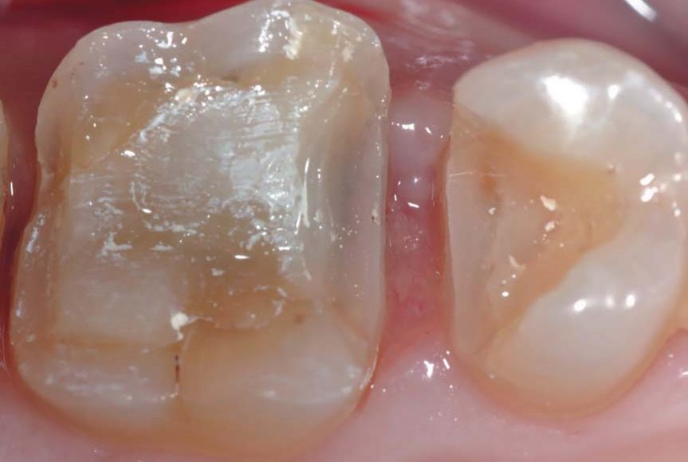
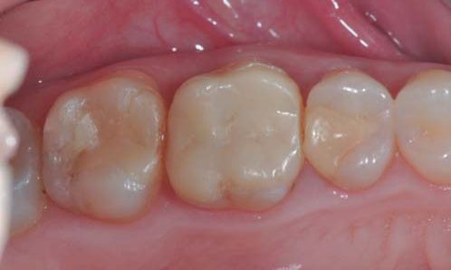
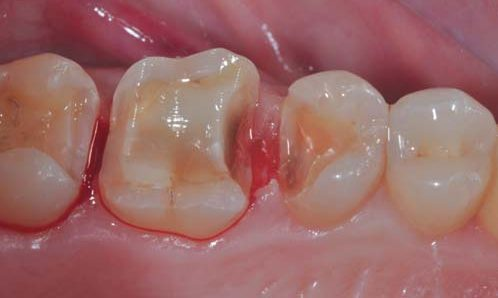
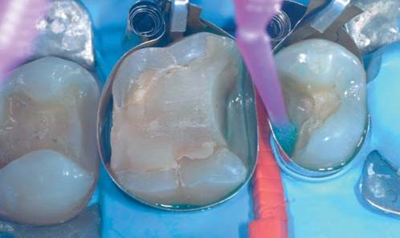
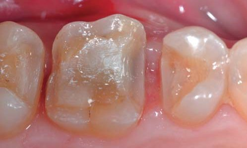
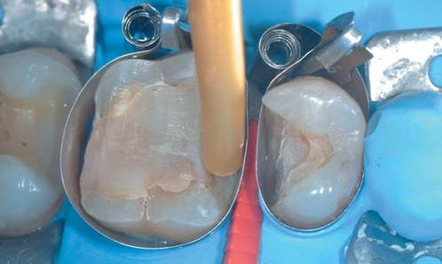
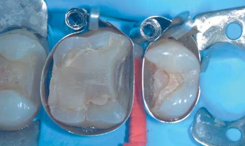
Підняття країв і препарування
Рабердам і металеві матриці встановили, щоб забезпечити ідеальну ізоляцію глибоко розташованого краю, незважаючи на те, що склоіономер є менш чутливим до вологості (фото 3). Цей етап ключовий, тому що він є основою біосумісної реставрації. Ми надійно встановили пластмасовий клинець, щоб щільно притиснути матрицю до краю порожнини і не допустити потрапляння крові на робочу поверхню.
Спрощений протокол обробки поверхні передбачає нанесення поліакрилової кислоти на 10 с. Потім її потрібно змити потужним струменем води і підсушити (фото 4).
Капсулу зі склоіономерним цементом DeltaFill (DMG) активовано, замішано, встановлено у диспенсер, потім цемент видавлено у проксимальну зону, щоб заповнити лише нижній рівень порожнини, адже у верхній частині він не потрібен (фото 5).
Щоб зменшити полімеризаційний стрес на матеріал, хімічне затвердіння має тривати 1 хв. Потім металеву матрицю, пластиковий клинець і рабердам було знято (фото 6).
Зуби відпрепаровані під вкладки і накладки, орієнтуючись на потрібну товщину керамічного матеріалу.
Приясенні краї вже розташовані неглибоко (фото 7). З використанням замінника дентину ми підняли краї вище за рівень ясен, щоб легше було виконувати всі подальші клінічні дії (зняття відбитка, встановлення тимчасових реставрацій та виконання адгезивного протоколу фіксації реставрацій).
Знято відбиток з використанням Honigum Pro Putty Soft і Honigum Light Body (DMG) (фото 8).
Керамічні вкладки і накладки виготовлені з дисилікату літію (фото 9).
Тимчасові реставрації виготовили з Luxacrown (DMG) у день зняття відбитка. На світлині можна побачити, який вигляд вони мали через 2 тижні (фото 10).
Фіксація реставрацій
Адгезивний протокол завжди починається з ізоляції рабердамом, адже так ми матимемо кращий огляд операційного поля. Рабердам встановлюється швидко (за 10–15 с). Завдяки новому доступу до проксимального краю кровотечі більше не очікувалося, тому не було потреби у встановленні ретракційної нитки і весь адгезивний протокол було виконано без проблем (фото 11).
Після піскоструминної обробки поверхні нанесли ортофосфорну кислоту на 30 с (фото 12).
Універсальний адгезив LuxaBond Universal (DMG) наносили впродовж 15 с, щоб він проник глибоко у дентин. Потім його полімеризували світлом (фото 13).
Коли композитний цемент було введено всередину реставрації, зайву кількість прибрали щіточкою. Щоб накладка була встановлена ідеально, скористалися Optrasculpt PAD. Найбільший ризик полягає у тому, що коли керамічну реставрацію встановлено, а зайву кількість композитного цементу прибрано, можна припустити, що конструкція встановлена добре. Стоматолог має знати, що композит в’язкий, і тому конструкція може зміститися з відпрепарованої поверхні. Тож щоб встановити керамічну реставрацію в ідеальне для неї місце, потрібен допоміжний інструмент (фото 14).
Вигляд зафіксованих керамічних реставрацій — фото 15.
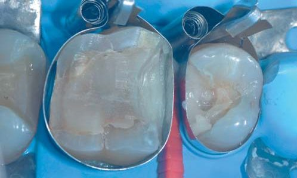
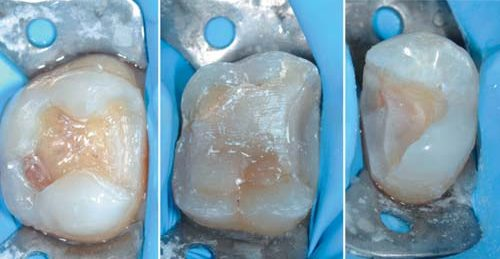
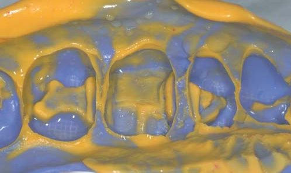
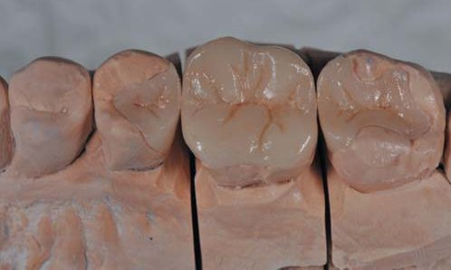
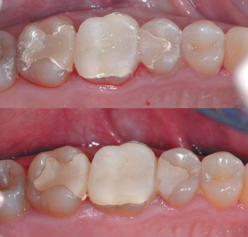
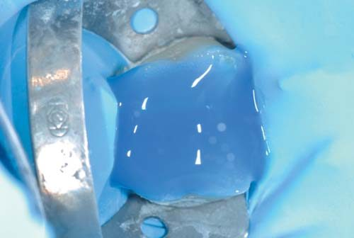
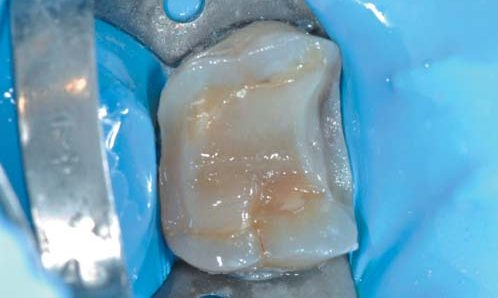
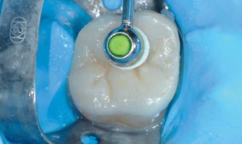
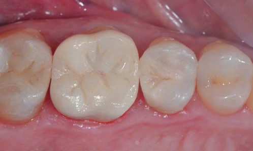
Висновки
Адгезивні реставрації бічних зубів — найпоширеніший варіант лікування у повсякденній практиці. Для стоматолога дуже важливо зробити цю процедуру якомога простішою і стандартною.
Лікар має стандартизувати адгезивний протокол і тому для відновлення зуба повинен користуватися замінником дентину. Ось переваги такого підходу:
- негайна герметизація дентину (хімічна і механічна);
- відсутність післяопераційної чутливості;
- простіший доступ до проксимальних країв порожнини;
- адгезивний протокол і встановлення рабердаму виконуються швидше;
- створення загальної платформи на 2/3 глибини порожнини як для прямих, так і непрямих реставрацій.
Література
- Magne P. Immediate dentin sealing: a fundamental procedure for indirect bonded restorations. J Esthet Restor Dent. 2005; 17(3): 144–154; discussion 155.
- Sarfati A., Tirlet G. Deep margin elevation versus crown lengthening: biologic width revisited. Int J Esthet Dent. 2018; 13(3): 334–356.
- Koubi S., Raskin A., Dejou J., About I., Tassery H., Camps J., Proust J. P. Effect of dual cure composite as dentin substitute on the marginal integrity of Class II open-sandwich restorations. Oper Dent. 2010 Mar–Apr; 35(2): 165–171.
- Koubi G. F., Koubi S., Brouillet J. L. The Composite Up Technique: a simple approach to direct posterior restorations. Ad in Op Dentistry, 2001.